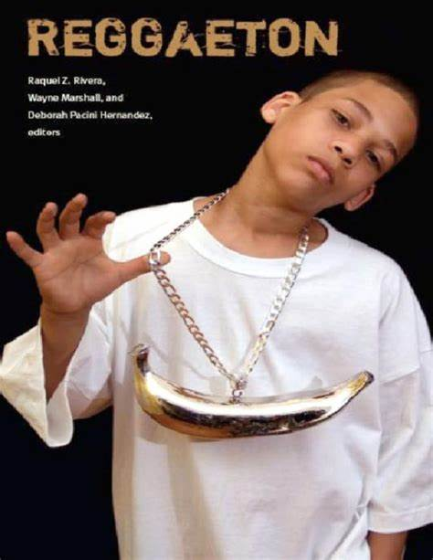

Reggeton
¿Qué es?
El reguetón surge como una fusión de diversos estilos musicales como el reggae en español, el dancehall, el hip hop y la música electrónica. Su origen se remonta a los barrios marginales de San Juan, Puerto Rico, a fines de los años 80 y principios de los 90. Los DJ locales comenzaron a experimentar con ritmos y sonidos, dando lugar a un estilo único que reflejaba las realidades sociales y culturales de la juventud urbana.
El reguetón es un género musical urbano que se originó en Puerto Rico en la década de 1990. Se caracteriza por sus ritmos rítmicos, influencias de la música latina y caribeña, así como letras pegajosas que abordan temas como el amor, el desamor, la fiesta y la vida en la calle.
Historia
Entre las bandas pioneras del reguetón se destacan nombres como "The Noise", un colectivo de DJ y productores que tuvieron un papel fundamental en el desarrollo inicial del género. También se menciona a artistas como Vico C y Daddy Yankee, quienes contribuyeron significativamente a la popularización del reguetón tanto en Puerto Rico como a nivel internacional.
10 Artistas Icónicos
Los 10 artistas más icónicos a nivel mundial y hablando históricamente son:
-
 Daddy Yankee
Daddy Yankee
-
 Don Omar
Don Omar
- Wisin & Yandel
- Tego Calderón
- Nicky Jam
- Ivy Queen
-
 J Balvin
J Balvin
-
 Ozuna
Ozuna
-
 Bad Bunny
Bad Bunny
-
 Anuel AA
Anuel AA
Álbumes Esenciales
Estos son los álbumes más escuchados y más esenciales en la historia del reguetón:

5 Canciones Emblemáticas
Las canciones mas emblematicas a nivel global del reggeton son:
Festivales Famosos
Aunque el reguetón no ha tenido festivales específicos dedicados exclusivamente al género, ha sido una parte integral de muchos festivales de música latina y urbana en todo el mundo. Entre ellos se destacan eventos como el Festival de Viña del Mar en Chile, el Festival Internacional de la Canción de Viña del Mar, y el Festival de Música Urbana de Puerto Rico.
Algunos de los conciertos más memorables del reguetón incluyen la presentación de Daddy Yankee en el Madison Square Garden en Nueva York en 2005, así como la participación de artistas como Wisin & Yandel, Don Omar y Tego Calderón en eventos masivos en toda América Latina y Estados Unidos.
Estilos de Moda
La moda en el reguetón ha evolucionado a lo largo de los años, reflejando las tendencias urbanas y callejeras. Entre los estilos de moda más emblemáticos del reguetón se incluyen las camisetas holgadas, los pantalones baggy, las zapatillas deportivas, las gorras y las cadenas de oro.
Cultura y Actitud
El reguetón no solo es un género musical, sino también una expresión cultural que refleja las realidades de la vida urbana, especialmente en los barrios marginales de Latinoamérica y el Caribe. La actitud del reguetón se caracteriza por su energía, su espíritu festivo y su enfoque en la celebración de la vida y la cultura callejera.
Libros y Documentales
Aunque no hay tantos libros y documentales específicos sobre el reguetón en comparación con otros géneros musicales, algunos trabajos han explorado su historia y su impacto cultural. Entre ellos se destacan el documental "Dembow: La Voce Del Reggaeton" y el libro "Reggaeton", de la investigadora Raquel Z. Rivera, que analiza el género desde una perspectiva sociocultura
